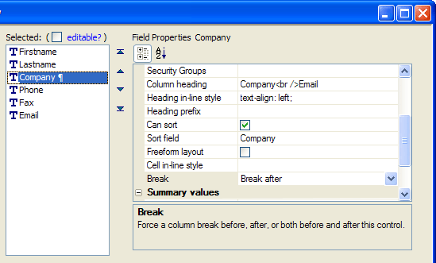
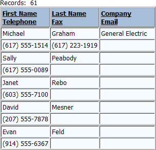
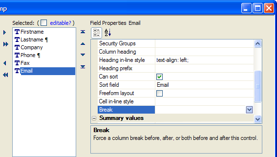
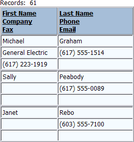

Using Breaks for Control Positioning
When designing a dialog component or a grid component with columnar formatting, you may change the Layout Options > Number of "Layout" Columns property. If the value of this property is greater than 1, you may position controls by inserting a "break" before, after, or before and after any control.
The initial grid has 6 fields. We place a break after the Company field.

This causes the Phone, Fax, and Email fields to wrap to a second row. By default, the grid only shows the labels of the first row of controls. We changed the Column heading properties of the Firstname, Lastname, and Company fields to add the other field names. See the Column heading property in the picture above.

This variation of the grid shows breaks after the Lastname and Phone fields.

Again, we edited the Column heading properties to show all the field names in the Firstname and Lastname column headings.

See Also
Using the Number of "Layout" Columns Feature
Limitations
Web publishing applications only.